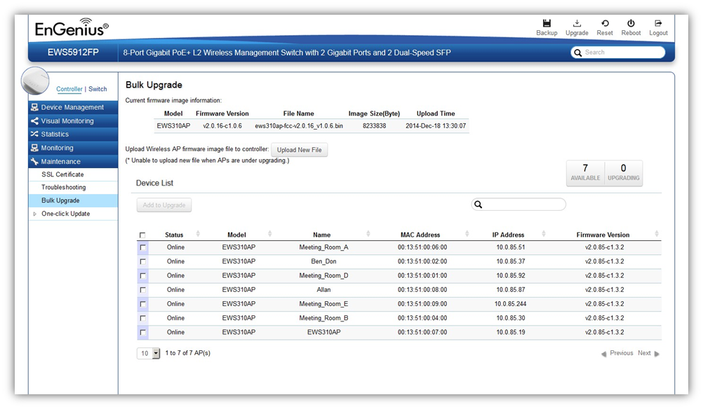

Maintenance > Bulk Upgrade
The Bulk Upgrade feature allows administrators to upgrade the firmware of multiple Access Points at the same time. After uploading the firmware of an AP, the system will automatically display a list of Access Points the system is currently managing that the uploaded firmware is for.

To upgrade, please follow the steps below:
1. Click on Upload New File to mount AP firmware onto EWS Switch flash
2. Once the Access Point firmware is uploaded onto the Controller, the list of Access Points that the uploaded firmware is for will appear in the Device List.
3. Select the Access Points you wish to upgrade and click Add to Upgrade to start the firmware upgrading process.
NOTE: Upgrading APs will temporarily disconnect them (and any associated clients) from the network. To minimize network disruption, we recommend performing the firmware upgrading procedure at an off-peak time.
Created with the Personal Edition of HelpNDoc: Single source CHM, PDF, DOC and HTML Help creation